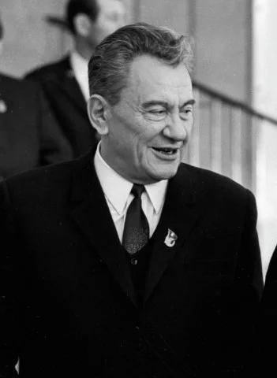

Dinmukhamed Akhmetuly Kunaev

About Dinmukhamed Kunaev
Dinmukhamed Akhmedovich Kunaev (1912–1993) was a prominent Kazakh statesman and political leader. He served as the
First Secretary of the Communist Party of Kazakhstan from 1964 to 1986 (with a short interruption). During his leadership, he
became one of the most influential figures in the Soviet republic.
Achievements:
- Industrial Development – Expanded Kazakhstan’s mining and metallurgical industries, making the republic one of the
leading raw material bases of the USSR.
- Urban Growth – Contributed to the modernization of Almaty, turning it into a major cultural, scientific, and
administrative center.
- Support for Education and Science – Promoted universities, research institutes, and the growth of Kazakh intelligentsia.
- Political Influence – Strengthened Kazakhstan’s position within the Soviet Union and became a respected leader trusted
by both the people and Moscow.
- To learn more click here